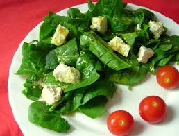

Recetas de la huerta
Sopa Cremosa de Zanahoria
Una sopa reconfortante y nutritiva, perfecta para días fríos. Hecha con zanahorias frescas y un toque de jengibre.
Ingredientes:
- 500g de zanahorias frescas
- 1 cebolla picada
- 1 trozo de jengibre (2 cm)
- 1 litro de caldo de verduras
- Sal y pimienta al gusto
Preparación:
- En una olla, saltea la cebolla y el jengibre.
- Añade las zanahorias picadas y el caldo. Cocina hasta que las zanahorias estén blandas.
- Licúa la mezcla hasta obtener una textura suave. Sirve caliente.

Ensalada de Espinacas y Nueces
Una ensalada fresca y vibrante, ideal para una comida ligera. Combina espinacas, nueces, queso de cabra y una vinagreta balsámica.
Ingredientes:
- 200g de espinacas frescas
- 50g de nueces picadas
- 100g de queso de cabra desmenuzado
- Vinagreta balsámica al gusto
Preparación:
- Lava y seca las espinacas. Colócalas en un bol grande.
- Añade las nueces y el queso de cabra.
- Aliña con la vinagreta balsámica justo antes de servir.
Salteado de Pimientos Tricolores
Un plato rápido y lleno de color. Saltea pimientos rojos, amarillos y verdes para una guarnición deliciosa y llena de vitaminas.
Ingredientes:
- 1 pimiento rojo
- 1 pimiento amarillo
- 1 pimiento verde
- 1 cebolla
- Aceite de oliva, sal y pimienta
Preparación:
- Corta los pimientos y la cebolla en tiras finas.
- Calienta aceite en una sartén grande. Saltea las verduras a fuego medio-alto.
- Cocina hasta que estén tiernas pero aún crujientes. Sazona al gusto.